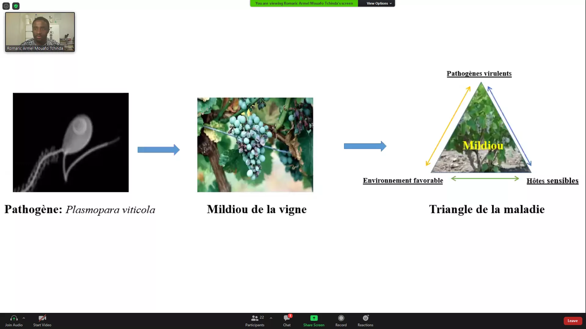
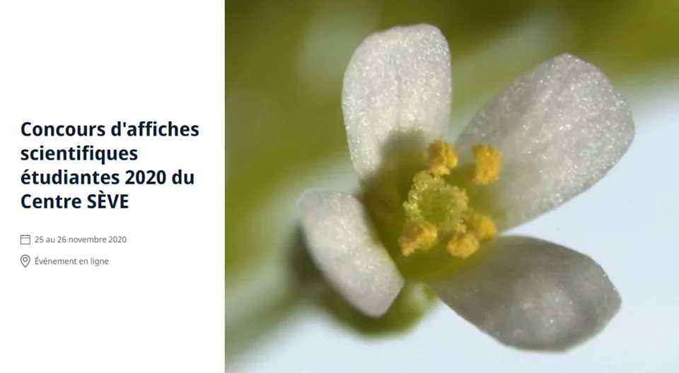
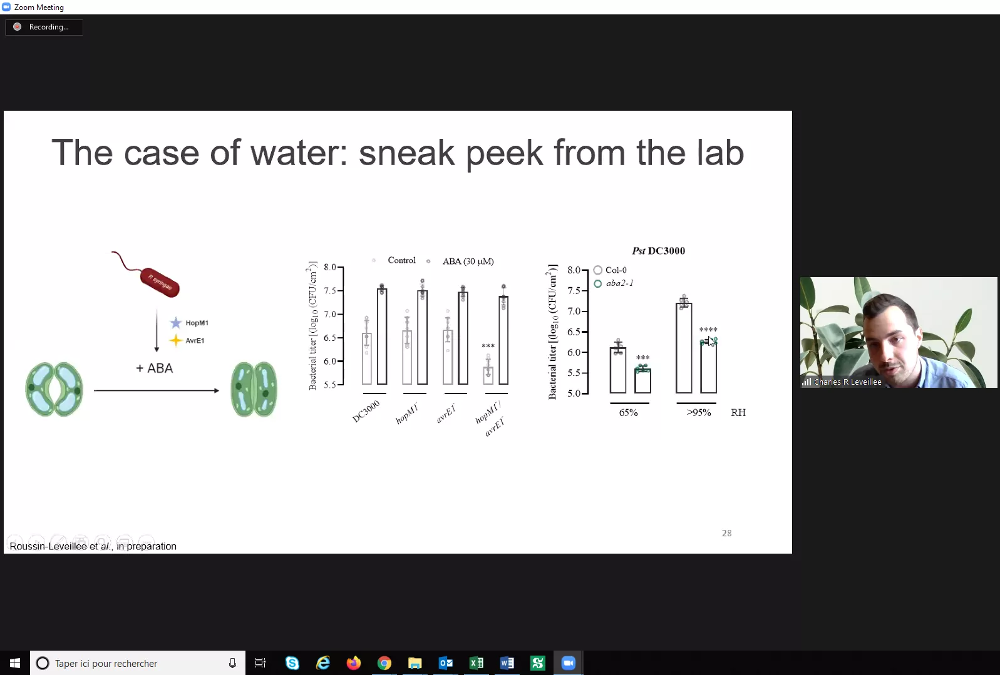
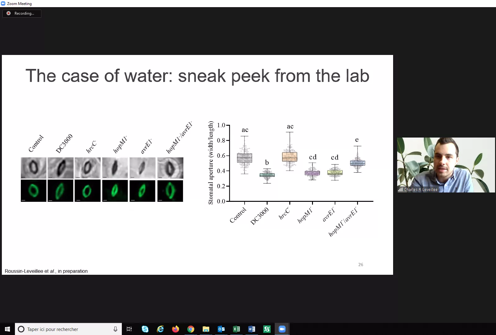
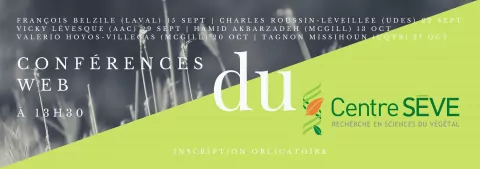
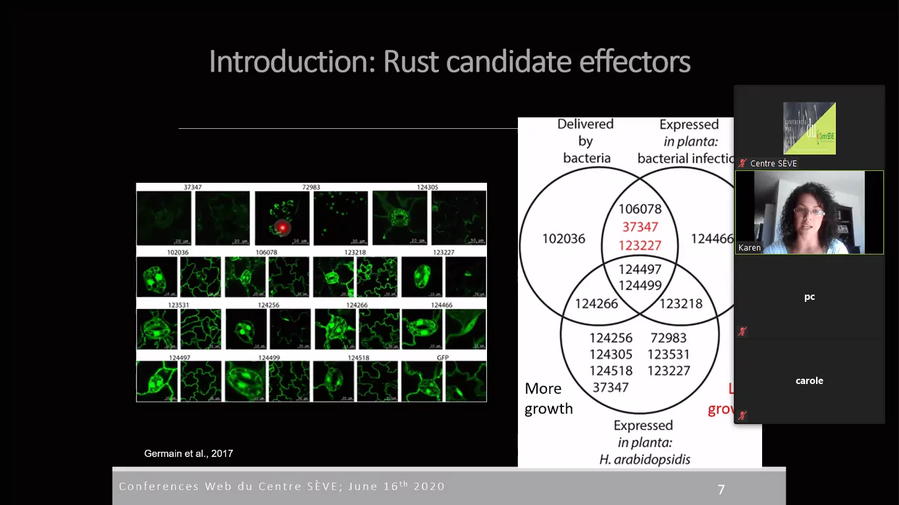

Are you a Centre SEVE member?
Don’t know yet, check out the link below to find out.
Also, get your email registered to get the CPICS meetings alerts.
2022
2022-03-10
New publication by Dr. Tagnon Missihoun his master’s student Amal Jaballi from UQTR.
Publication: The phytohormone abscisic acid modulates protein carbonylation in Arabidopsis thaliana
Congratulations !
2022-02-10
New publication of our previous Vice-President of Communications, Marianne Bessette.
Publication: Population genetic structure of the carrot weevil (Listronotus oregonensis) in North America
Congratulations !
2022-01-03
New publication from one of the researchers from Centre Séve, Dr. Isabel Desgagné-Penix, and her students Laurence Tousignant, Aracely Maribel Diaz Garza, Bharat Bhusan Majhi and Sarah-Eve Gélinas, in collaboration with the postdoctoral fellow Aparna Singh, from the University of New Brunswick.
Publication: Transcriptome analysis of Leucojum aestivum and identification of genes involved in norbelladine biosynthesis
Congratulations !!
2021
2021-12-03
Our treasurer Julie Yergeau just finished her master’s titled “The identificatoin of species of Phytophthora in the cultivars of Christmas trees in Quebec and the validatoin of the pathogenicity of P. abietivora” !
In addition, she won the prize of best presentation during the Symposiums MicroBioMoléculaires of the Fall Session of 2021 from the Université de Sherbrooke.
Congratulations, Julie!

2021-11-24
Our Vice-President in Networking Romaric Armel Mouafo Tchinda finished successfully his PhD degree on Phytopathology, with the thesis “Comparative epidemiology of the two main clades of Plasmopara viticola prevalent in eastern Canada”, under the directon of Dr. Carole Beaulieu and Dr. Odile Carisse.
Many congratulations!!!
2021-09-02
New publication from one of Centre SÈVE’s researchers, Dr. Isabel Desgagné-Penix, and her students Manoj Koirala and Seydou Ka, through an international collaboration with the Universita’ di Napoli Federico II (Italy) and the Universite Cheikh Anta Diop de Dakar (Senegal).
Congratulations to all involved for the hard work and specially to Dr. Isabel Desgagné-Penix for collaborating with researchers worldwide!
2021-08-30
Do you want to know more about the challenges faced by postdocs, the life of a bioinformatician or the academic path of our president, Dr. Karen Cristine Goncalves?
Watch her interview by the doctorate student Nikunj Sharma, from the Université du Québec à Trois-Rivières!
2021-05-05
Our president, Karen Cristine Goncalves, successfully finished her PhD in Cellular and Molecular Biology, with the thesis “Unrelated Fungal Rust Candidate Effectors Act on Overlapping Plant Functions”, under the direction of Dr. Hugo Germain and Dr. Isabel Desgagné-Penix.
She also published her work in MPDI Microorganisms: Unrelated Fungal Rust Candidate Effectors Act on Overlapping Plant Functions.
Finally, she has started her postdoctoral fellowship with Dr. Damase Khasa, Dr. Juan Carlos Villarreal Aguilar and Dr. Ilga Porth.
Bravo, Karen!!!
2021-04-06
Although 2021 has only begun, researchers members of Centre SEVE have been busy. Congrats for their great job during this pandemic!
Take a look at their publications here:
Anne-Lise Routier-Kierzkowska
Anne-Lise Routier-Kierzkowska
Benjamin Mimee
Benjamin Mimee
Damase Khasa
Damase Khasa
- 16S rRNA gene amplicon-based metagenomic analysis of bacterial communities in the rhizospheres of selected mangrove species from Mida Creek and Gazi Bay, Kenya
- Early Selection of Tree Species for Regeneration in Degraded Woodland of Southeastern Congo Basin
- Evaluation of an Acacia mangium Provenance Trial after Seven Years, on the Ibi-Batéké Plateau, Democratic Republic of the Congo
- Early Selection of Tree Species for Regeneration in Degraded Woodland of Southeastern Congo Basin
Daniel Kierzkowski
Donald Smith
Donald Smith
- Plant Holobiont Theory: The Phytomicrobiome Plays a Central Role in Evolution and Success
- Biomass for a sustainable bioeconomy: An overview of world biomass production and utilization
- Thuricin17 Production and Proteome Differences in Bacillus thuringiensis NEB17 Cell-Free Supernatant Under NaCl Stress
- Microbial Derived Compounds, a Step Toward Enhancing Microbial Inoculants Technology for Sustainable Agriculture
- Rhizobacteria from root nodules of an indigenous legume enhance salinity stress tolerance in Soybean
- Plant associated rhizobacteria for biocontrol and plant growth enhancement
- Inter-organismal signaling in the rhizosphere
Edel Pérez-López
Edel Pérez-López
Francois Belzile
Francois Belzile
- GWAS identifies a wheat orthologue of the rice D11 gene as an important contributor to grain size in an international collection of hexaploid wheat
- Genome-wide association study (GWAS) to identify soybean stem pushing resistance and lodging resistance loci
- Genome Assembly of the Canadian Two-row Malting Barley Cultivar AAC Synergy
- Soybean ( Glycine max ) Haplotype Map (GmHapMap): a universal resource for soybean translational and functional genomics
- A bumper crop of SNPs in soybean through high‐density genotyping‐by‐sequencing (HD‐GBS)
- Accurate Imputation of Untyped Variants from Deep Sequencing Data.
Gerald Chouinard
Gerald Chouinard
Hugo Germain
Hugo Germain
- Diatoms Biotechnology: Various Industrial Applications for a Greener Tomorrow
- Recent Development on Plant Aldehyde Dehydrogenase Enzymes and Their Functions in Plant Development and Stress Signaling
- Asymptomatic carriers of COVID-19 in a confined adult community population in Quebec: a cross-sectional study
Isabel Desgagne-Penix
Isabel Desgagne-Penix
Isabelle Laforest-Lapointe
Isabelle Laforest-Lapointe
Jacqueline C Bede
Jacqueline C Bede
Jaswinder Singh
Jaswinder Singh
Jean-Benoit Charron
Jean-Benoit Charron
Jean-Philippe Bellenger
Jean-Philippe Bellenger
Joann Whalen
Joann Whalen
- Macroaggregate persistence: Definition and applications to describe soil surface dynamics
- Quantitative screening for cyanotoxins in soil and groundwater of agricultural watersheds in Quebec, Canada
- Earthworms in soil ecology and organic waste management (Preface)
- Freeze-thaw cycles release nitrous oxide produced in frozen agricultural soils
- Earthworm contributions to soil nitrogen supply in corn-soybean agroecosystems in Quebec, Canada
- Perspectives to Increase the Precision of Soil Fertility Management on Farms
- Seasonal variation of aerosol composition in Orange County, Southern California
- Fall-applied manure with cover crop did not increase nitrous oxide emissions during spring freeze-thaw periods
- Fall-applied cattle manure did not provide nitrogen fertilizer value to spring cereal crops
- Functional diversity of decomposers modulates litter decomposition affected by plant invasion along a climate gradient
- Characteristics and health risk assessment of heavy metal contamination from dust collected on household HVAC air filters
- Earthworms did not increase long-term nitrous oxide fluxes in perennial forage and riparian buffer ecosystems
- Earthworm populations are stable in temperate agricultural soils receiving wood-based biochar
- Earthworm functional groups are related to denitrifier activity in riparian soils
Laurent Cappadocia
Laurent Cappadocia
Marc Bélisle
Marc Bélisle
Martina Stromvik
Martina Stromvik
Maxime Paré
Martine Dorais
Martine Dorais
Philippe Seguin
Philippe Seguin
Pierre Dutilleul
Pierre Dutilleul
Richard Bélanger
Richard Bélanger
Robert L Bradley
Robert L Bradley
Steeve Pepin
Steeve Pepin
Valérie Fournier
Valerio Hoyos-Villegas
Valerio Hoyos-Villegas
Vincent Maire
Vincent Maire
2021-01-29
Say hello to our two new members of the CSIPC: Snehi Gazal (VP Communication) and Valeria Parra (VP Networking)!
We thank Claire Letanneur, Teura Barff and Marianne Bessette for their work. They may no longer be part of the executive committee, but they will always be welcome to our meetings and events.
2021-01-27
Congratulations to Michelle Boivin (UQTR), a student at the Centre SÈVE for her intriguing project of revalorizing organic matter.


2020
2020-11-06
Congratulations to Aracely Maribel Diaz Garza, our secretary, for her paper about the temporal Dynamics of Rhizobacteria in crops grown in a semi-arid ecosystem.
Bravo!


2020-11-06
Congratulations to Karen Cristine Goncalves, our secretary, for her preprint about fungal candidate effectors.
Great work!
Preprint: Differential alteration of plant functions by homologous fungal candidate effectors
2020-11-05
Congratulations to Fadoua Dhaouadi, Fatima Awwad and Andrew Diamond for the publication of a scientific review about diatoms.
We specially congratulate Fadoua Dhaouadi for her first publication!
2020-10-27
Today, Romaric Armel Mouafo Tchinda practiced his presentation for Ma thèse en 180s de l”ACFAS, where he will represent Université de Sherbrooke.
Watch the finals November 19th.

2020-10-24
Submitted by their students, the laboratories of Dr. Isabel Desgagné-Penix and Dr. Hugo Germain won the Canadian Bureau for International Education Equity, Diversity and Inclusion (EDI) Award.
Congratulations!2020-10-02
We are happy to announce and invite you to Centre SÈVE”s Student Poster Competition 2020. This virtual event will take place on November 25th and 26th 2020.
The registration page for participants and for submission of posters is now online. There you will find also all the information about the event.
We look forward to seeing you there!

2020-09-22


Conférence Web from Centre SÈVE today, with Charles Roussin-Léveillée from the Université de Sherbrooke. Thank you to all participants!
Source: Centre SÈVE
2020-08-17
You want to know more about our guest Isabelle Laforest-Lapointe, of USherbrooke for the August 25th ?
Read this article about her work!!
2020-08-14
You want to know more about our guest Leena Tripathi for the August 25th ?
Watch this video of IITA CGIAR about her work !!
2020-08-10
Centre SÈVE has announced a new series of Web Conferences that starts September 15th!

| September 15th | François Belzile | Aventures dans l’univers des SNP : un premier bilan de SoyaGen, un projet de grande envergure en génomique du soya |
| September 22nd | Charles Roussin-Léveillée | The Apoplastic Battleground in Plant-Pathogen Interactions |
| September 29th | Vicky Lévesque | L’amendement en biochar: Une approche durable pour améliorer la santé du sol et la croissance de la plante en horticulture |
| October 13th | Hamid Akbarzadeh | Sustainable Bio-inspired Metamaterials |
| October 20th | Valerio Hoyos-Villegas | The McGill Field Phenomics Platform: Increasing Resolution for Complex Trait Improvement |
| October 27th | Tagnon Missihoun |
2020-07-29
Congratulation to the Centre SEVE students that are presenting at the Worldwide Plant Biology Summit 2020.
You can see their posters in our twitter (link bellow).
Amir Bidhendi, Francisco Campos, Gaële Lajeunesse, and Julian Henao-Martinez
Adrien Fremont, Charles Roussin-Léveillée, Eszter Sas and Guilherme Silva-Martins
| IRBV | McGill University | Université de Laval | Université de Montréal | Université de Sherbrooke |
|---|---|---|---|---|
| Camille Auger | [Amir Bidhendi] | Francisco Campos | Eszter Sas | Charles Roussin-Léveillée |
| Adrien Fremont | Karuna Kapoor | Gaële Lajeunesse | ||
| Meha Sharma | [Guilherme Silva-Martins] | |||
| Julian Henao-Martinez | Iauhenia Isayenka |
2020-07-07

Fatima Awwad, postdoc from UQTR, presented us today the potential of microalgae in the Centre SEVE”s web conferences. Thank you to all participants.
Source: Centre SEVE
2020-06-16

Another captivating Centre SEVE”s web conference today with [Karen Cristine Gonçalves] from UQTR. Thank you to all participants.
Source: Centre SEVE
2020-05-09
Welcome to Aracely Maribel Diaz Garza and Vincent Charron-Lamoureux in CSPIC”s administration as secretaries, replacing Alexia Bertholon, who unfortunatly had to leave the committee.
Congratulation to you two!
2020-03-02
Congratulations to Claire Letanneur, PhD student at UQTR, for the award of a grant at the first competition of the student category from the FRQNT illustration of DIALOGUE funding. Only four projects were selected for each research sector of the FRQ”s
2019
2019-09-30
We would like to thank Rose-Marie Bell, master”s student in Plant Biology at the Université Laval, for sharing her experience at the Centre SÈVE Annual International Symposium in the student newspaper L”Agral.
OGM, tabou démystifié : topo sur le symposium international annuel du centre SÈVE
French only
2019-08-29
Some memories of the Centre SÈVE Annual International Symposium
Department of Biology - University of Sherbrooke
About sixty participants and speakers were able to share their knowledge, discuss and forge links on the theme of “Biotechnology for food security”
Objective achieved for this first symposium organized by the students of CPICS!
Thank you once again to the event sponsors:
2019-06-11
Registration for the first edition of the Centre SÈVE Annual International Symposium which will take place on August 23, is now open!
Students have the option of submitting an abstract to be selected for an oral presentation.
Here is the information to know:
The deadline for submitting an abstract is Monday July 22.
The abstract should be a maximum of 200 words.
It should be sent to the address: cpicseve@gmail.com, putting in cc. chantal.binda@usherbrooke.ca and mina.zitouni@usherbrooke.ca.
The expected duration per presentation is 10 minutes, followed by 5 minutes of questions.
Given the international scope of the symposium, English will be prioritized as the language of presentation and submission of abstracts. However French will also be accepted.
The decision taken by the committee will be communicated to each author no later than Monday, August 2, 2019.
To register, go to the Center SÈVE website. You will also find the schedule for the day and more, so don”t delay.
We can”t wait to see you there.
2019-03-14
We finally have the pleasure to introduce the Centre SÈVE International Partnership Committee. As you might know, we aspire to create collaboration opportunities between Centre SÈVE researchers and research laboratories in the rest of the world. We are currently working on the first Centre SÈVE Annual International Symposium, which will address “Biotechnology for Food Security” this year.
Stay tuned for more information not only on the symposium, but also on research topics addressed within Québec and outside.
In the meantime, We are leaving you with this pretty picture of this year’s committee.